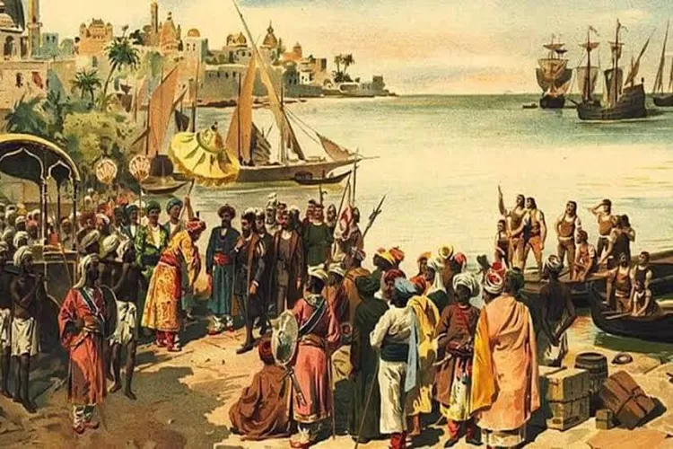

Bunga Seruni - Bunga ini dianggap sebagai lambang tertua dari Sriwijaya, dengan mahkota bunga yang terpilih dan berjumlah 31, berwarna kuning emas.
KERAJAAN SRIWIJAYA
Kerajaan Maritim Terbesar di Asia Tenggara (Abad ke-7 – 13 M)
Sejarah Singkat

Kerajaan Sriwijaya merupakan kerajaan maritim besar bercorak Buddha yang berdiri sekitar awal abad ke-7 Masehi dan memiliki pengaruh yang sangat besar di Nusantara pada masanya. Bukti awal keberadaan kerajaan ini dikuatkan oleh Prasasti Kedukan Bukit, yang berangka tahun 682 Masehi (604 Saka) dan ditemukan di Palembang, Sumatera Selatan.
Masa kejayaan Sriwijaya berlangsung dari abad ke-7 hingga abad ke-11 Masehi, sebelum akhirnya mengalami kemunduran akibat gangguan jalur perdagangan utamanya dan serangan dari musuh, termasuk serangan besar dari Raja Rajendra Chola dari Kerajaan Colamandala (India) pada awal abad ke-11. Kerajaan ini pada akhirnya runtuh total pada abad ke-14 Masehi, salah satunya akibat serangan dari Kerajaan Majapahit.
Pendiri Kerajaan
Pendiri Kerajaan Sriwijaya adalah **Dapunta Hyang Sri Jayanasa**. Dalam Prasasti Kedukan Bukit, Dapunta Hyang dikisahkan menaiki perahu untuk "mengambil *siddhayatra*" (perjalanan suci/kemenangan) dan memimpin ekspedisi yang berhasil menaklukkan Palembang, Lampung, Jambi, dan Bangka.
Ekspedisi yang dipimpin Dapunta Hyang Sri Jayanasa pada tahun 682 Masehi tersebut membawa bala dua laksa (20.000) dan berhasil membuat sebuah *wanua* (pemukiman) baru yang menjadi cikal bakal Sriwijaya. Prasasti ini diyakini sebagai "akta kelahiran" Kota Palembang dan menunjukkan keberhasilan Dapunta Hyang dalam memperluas wilayah dan mendirikan pemukiman.
Puncak Kejayaan

Sriwijaya menjadi salah satu kerajaan maritim terbesar di Asia Tenggara dengan menguasai jalur pelayaran dan perdagangan strategis, seperti Selat Malaka, Selat Sunda, dan Selat Bangka. Penguasaan jalur ini membawa keuntungan besar, baik dari perdagangan komoditas maupun dari pajak kapal asing yang singgah di pelabuhan milik Sriwijaya.
Selain sebagai pusat perdagangan, Sriwijaya juga menjadi **pusat agama Buddha Mahayana** yang sangat penting di Asia Tenggara, bahkan disebut sebagai pusat agama Buddha di luar India. Banyak biksu asing, termasuk biksu dari Tiongkok (I Tsing) dan biksu Tibet (Atisa), datang dan tinggal di Sriwijaya untuk belajar agama Buddha dari guru-guru besar setempat, seperti Dharmapala dan Dharmakirti.